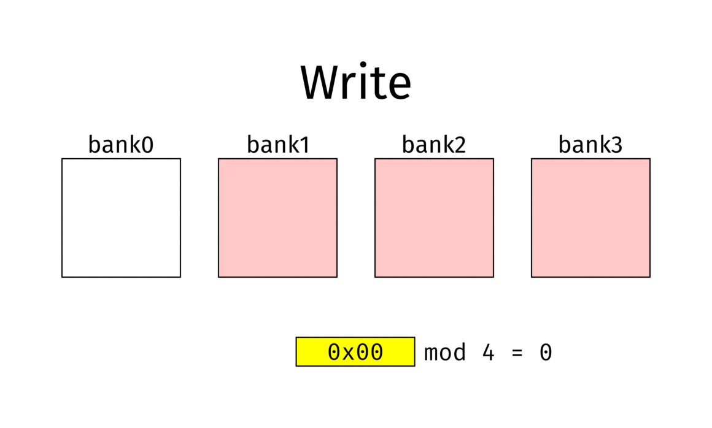

DRAM Memory Optimization: Bank Interleaving and Burst Mode
1. Introduction
There are three main ways to improve DRAM performance:
- Increase the memory bus width
- Increase the memory operating clock
- Apply Interleaving to maximize effective bandwidth
However, each of these approaches has limitations:
- Bus width expansion: increases pin count, board complexity, cost, and power consumption.
- Clock scaling: limited by DRAM specifications, power, and thermal constraints.
- Interleaving: not a silver bullet; efficiency depends on controller design and access patterns.
Therefore, simply increasing bus width or clock frequency is insufficient. In real systems, Bank Interleaving and Burst Mode are the key techniques that determine practical memory performance.
2. Memory Data Bus Bandwidth
The most intuitive way to improve performance is to widen the memory data bus.
Example configurations:
- 8-bit DRAM × 4 = 32-bit
- 16-bit DRAM × 2 = 32-bit
- 32-bit DRAM × 1 = 32-bit
- 16-bit DRAM × 1 (supported by some TI SoCs)
It may appear that “a wider bus always means higher performance,” but this assumption is misleading:
- Some TI SoCs expose a 32-bit external interface, but internally only 16-bit is used → no real benefit.
- Wider buses increase power consumption, cost, and PCB area.
Thus, the actual internal bus width supported by the SoC must always be verified. Misinterpreting this can result in unnecessary hardware complexity without real performance gain.
📌 Reference: AM437x / AM335x RAM Interface – Data Bus
👉 https://ahyuo79.blogspot.com/2016/08/am437x-am335x-ram-interface.html
3. Bank Interleaving
Bank Interleaving distributes memory accesses across multiple banks in DRAM.
Without interleaving, each access requires Row Activate → Read → Precharge, leaving the bus idle during precharge. With interleaving, accesses alternate across Bank0 → Bank1 → Bank2 …, so while one bank is in precharge, another bank can serve data. This greatly improves effective bandwidth utilization.

Source: Wikipedia – Interleaved Memory1

Source: Wikipedia – Interleaved Memory2
Advantages
- Maximizes memory bus utilization
- Hides row activation latency
- Mitigates CPU–DRAM performance gap
Disadvantages
- Simply adding more banks is not always beneficial; larger bank depth may degrade cost/performance balance.
- Efficiency depends on memory controller mapping and actual access patterns.
from transformers import pipeline
from PIL import Image, ImageDraw, ImageFont
# Load font
font = ImageFont.truetype("arial.ttf", 40)
# Initialize the object detection pipeline
object_detector = pipeline("object-detection")
# Draw bounding box definition
def draw_bounding_box(im, score, label, xmin, ymin, xmax, ymax, index, num_boxes):
""" Draw a bounding box. """
print(f"Drawing bounding box {index} of {num_boxes}...")
# Draw the actual bounding box
im_with_rectangle = ImageDraw.Draw(im)
im_with_rectangle.rounded_rectangle((xmin, ymin, xmax, ymax), outline = "red", width = 5, radius = 10)
# Draw the label
im_with_rectangle.text((xmin+35, ymin-25), label, fill="white", stroke_fill = "red", font = font)
# Return the intermediate result
return im
# Open the image
with Image.open("street.jpg") as im:
# Perform object detection
bounding_boxes = object_detector(im)
# Iteration elements
num_boxes = len(bounding_boxes)
index = 0
# Draw bounding box for each result
for bounding_box in bounding_boxes:
# Get actual box
box = bounding_box["box"]
# Draw the bounding box
im = draw_bounding_box(im, bounding_box["score"], bounding_box["label"],\
box["xmin"], box["ymin"], box["xmax"], box["ymax"], index, num_boxes)
# Increase index by one
index += 1
# Save image
im.save("street_bboxes.jpg")
# Done
print("Done!")
3.1 Bank Interleaving in TI SoCs
Sitara (AM335x, AM437x)
TI SoCs provide Bank Interleaving through the EMIF (External Memory Interface).
- The level of interleaving depends on address bit mapping.
- Example: IBANK 3-bit + EBANK 1-bit → 16-bank interleaving
- Example: IBANK 2-bit + EBANK 1-bit → 8-bank interleaving
While performance does not increase linearly with the number of banks, enabling interleaving yields clear efficiency improvements.
DaVinci (DM385)
DaVinci SoCs like the DM385 target multimedia workloads (video encoding/decoding), where memory bandwidth is critical.
- Merely increasing DDR frequency is insufficient.
- Instead, Bank Interleaving and tuning of memory parameters are essential for performance.
Key parameters include:
- RSIZE: Row address size
- PAGESIZE: Column address size
- IBANK: Number of banks per DRAM
- EBANK: Number of DRAM devices
The way these parameters are mapped determines interleaving capability. Proper configuration improves efficiency and bandwidth even at the same clock speed.
3.2 Burst Mode and Prefetch Buffers
Burst Mode defines how many data words are transferred per read/write command. It has existed since early SDR/DDR, but prefetch buffer sizes have evolved across generations:
| Generation | Prefetch | Default Burst Length | Burst Chop Support |
|---|---|---|---|
| DDR | 2n | 2, 4, 8 | None |
| DDR2 | 4n | 4, 8 | None |
| DDR3 | 8n | 8 | BC4 (4) |
| DDR4 | 8n | 8 | BC4 (4) |
| DDR5 | 16n | 16 | BC8 (8) |
Burst Chop (BC)
- Introduced in DDR3.
- Transition from DDR2 → DDR3 increased prefetch from 4n to 8n, with a fixed BL8 (8-word burst).
- DDR2’s BL4 mode could no longer be supported directly, so BC4 was introduced.
Operation:
- BC4: In a BL8 transfer, the first 4 words are transmitted, the remaining 4 are masked.
BL8 : [D0][D1][D2][D3][D4][D5][D6][D7]
BC4 : [D0][D1][D2][D3][ -- Mask -- ]
- BC8 (DDR5): In a BL16 transfer, the first 8 words are transmitted, the remaining 8 are masked.
Thus, Burst Chop is not a fundamentally new mechanism, but rather a compatibility feature to emulate shorter burst lengths within longer burst architectures.
📌 References:
4. Channel Interleaving
If Bank Interleaving is an internal DRAM optimization, Channel Interleaving is an external SoC-level technique.
Concept
- Multiple EMIFs are connected to the SoC’s internal OCP bus.
- Each EMIF provides an independent DRAM channel, enabling parallel access.
- High-end TI SoCs provide dual EMIF (2×32-bit) for 64-bit DDR3 interfaces.
Examples
- AM335x, AM43xx: Single EMIF → Channel Interleaving not possible
- AM57x, DM816x: Dual EMIF → Channel Interleaving supported
While effective, Channel Interleaving comes with costs: increased SoC price, more package pins, and higher power consumption. Thus, it is generally only available in high-end multimedia/industrial SoCs, not in mainstream embedded devices.
Conclusion
- Bus bandwidth: straightforward but must confirm actual SoC support.
- Bank Interleaving: a critical optimization available even in single-EMIF SoCs.
- Burst Mode / Burst Chop: key evolutionary features across DDR generations, ensuring shorter burst compatibility.
- Channel Interleaving: powerful but limited to high-end SoCs due to cost, pin, and power trade-offs.
For most SoCs, optimization revolves around Bus bandwidth and Bank Interleaving, while Channel Interleaving remains an advanced option for premium systems.
References
Original (Korean):
- DRAM Memory 최적화: Bank Interleaving과 Burst Mode
https://ahyuo79.blogspot.com/2013/11/sdram-ddr.html
Related (Korean):
- RAM/DRAM – Category Overview
https://ahyuo79.blogspot.com/search/label/RAM-DRAM
External (English):
- Bank Interleaving – Wikipedia
https://en.wikipedia.org/wiki/Interleaved_memory - Prefetch buffer – Wikipedia
https://en.wikipedia.org/wiki/Prefetch_buffer - Burst Chop – Rampedia
http://www.rampedia.com/index.php/define-burst_chop
This article is based on my original Korean blog notes, with English writing refined with the help of ChatGPT.